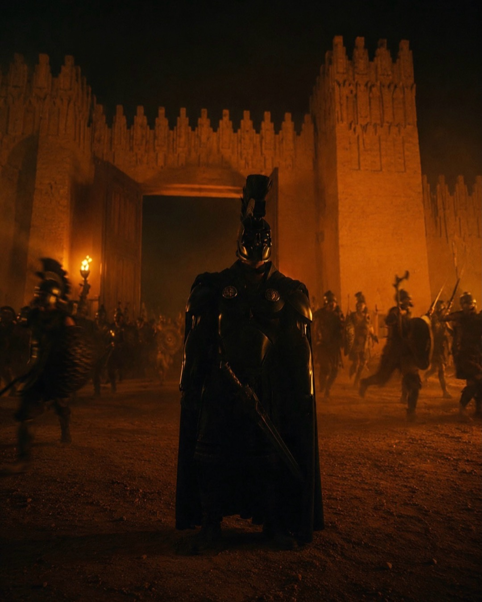
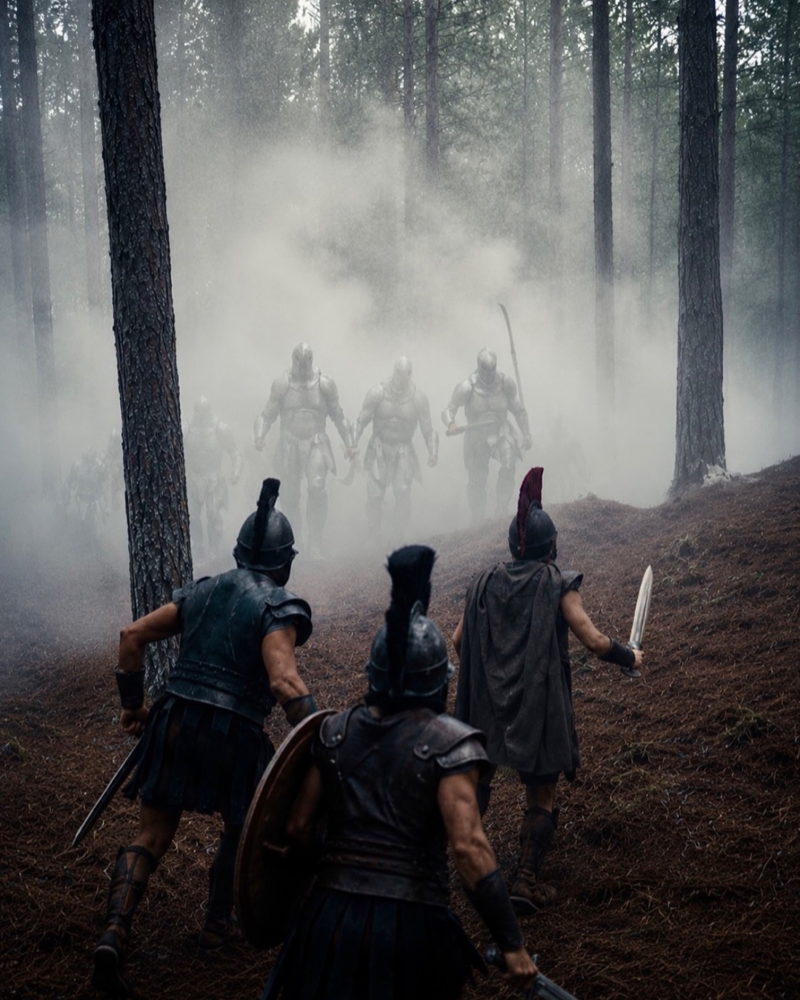
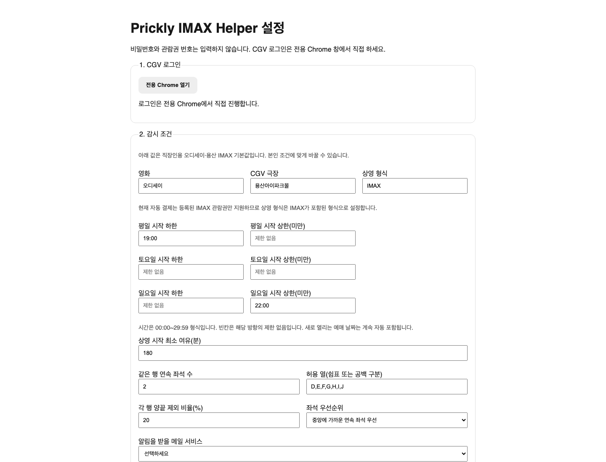
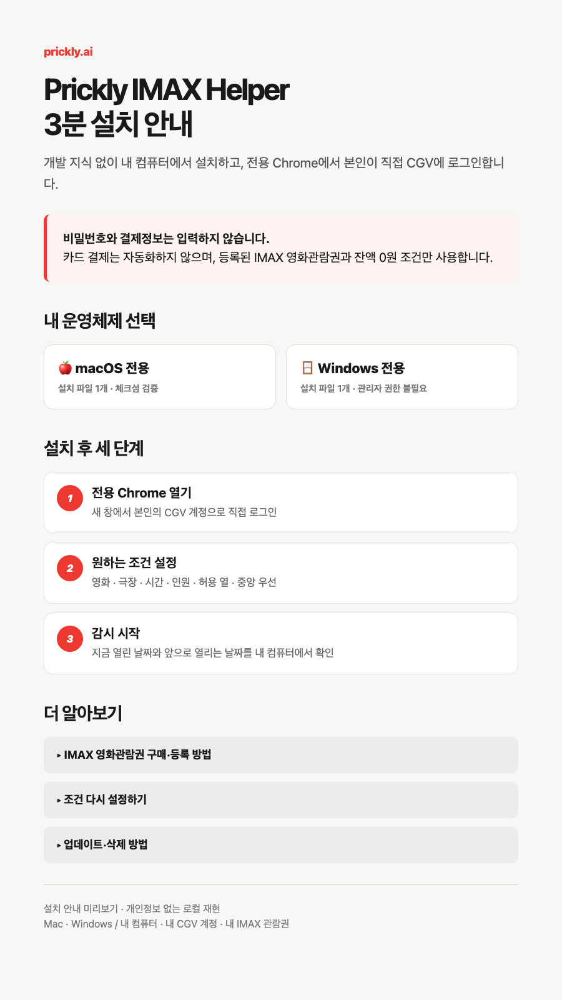

01 / 08용아맥 표를 구하려고
며칠째 새로고침하고 있다면.
나 역시 같은 문제를 겪었다.
기존 8장의 문제 제기, 실제 Helper 데모, 안전한 가치 제안과 댓글 CTA는 그대로다. 바뀌는 것은 장면별 구도, 실제 화면의 비중, 자막의 위치와 움직임뿐이다.

01 / 08나 역시 같은 문제를 겪었다.

02 / 08실제 화면 녹화 사용. 가짜 브라우저 목업은 만들지 않는다.

실제 설정 화면 위에 필요한 표시만 남긴다.
최종 출력에는 개인정보를 제거한 실제 감시 녹화를 사용한다.
스크롤과 한 번의 강조로 보여준다.

설정 완료 → 감시 중 → 설치 안내를 한 영상으로 연결한다.
모든 장의 이미지와 설명을 같은 비율로 나누지 않는다. 장면의 목적에 따라 전체 화면, 좌우 분할, 비대칭 여백을 선택한다.
브라우저, 터미널, 휴대폰을 새로 그리지 않는다. 실제 설정·감시·Notion 화면만 사용한다.
pill, badge, 기능 카드, 반복 아이콘과 불필요한 영문 kicker를 제거한다.
느린 확대, 실제 커서 이동, 필요한 영역 강조만 사용한다. 모션이 없어도 메시지가 남아야 한다.